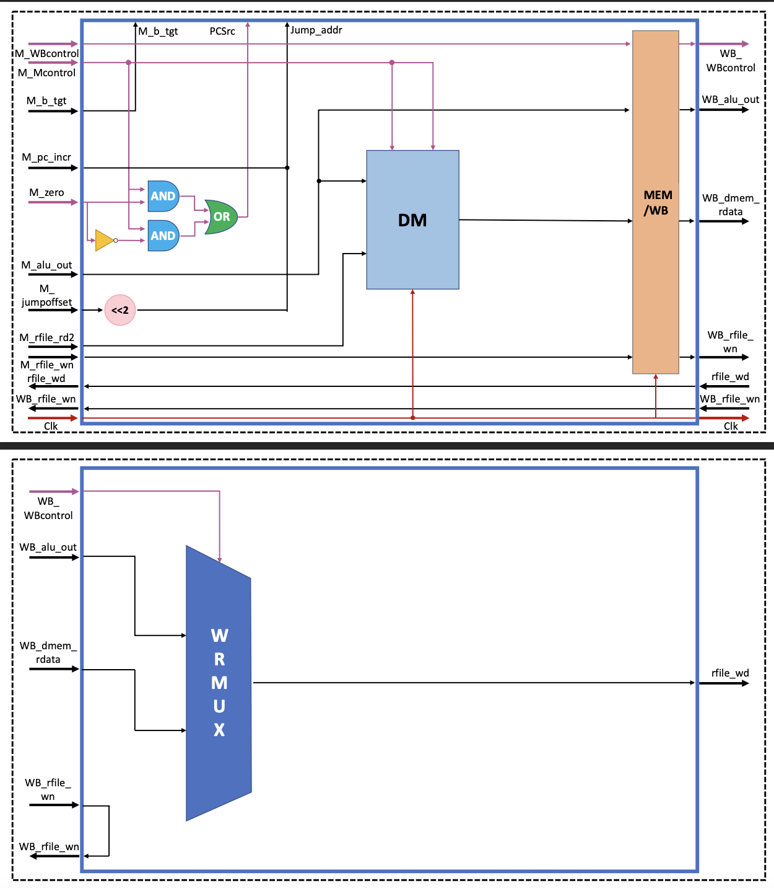
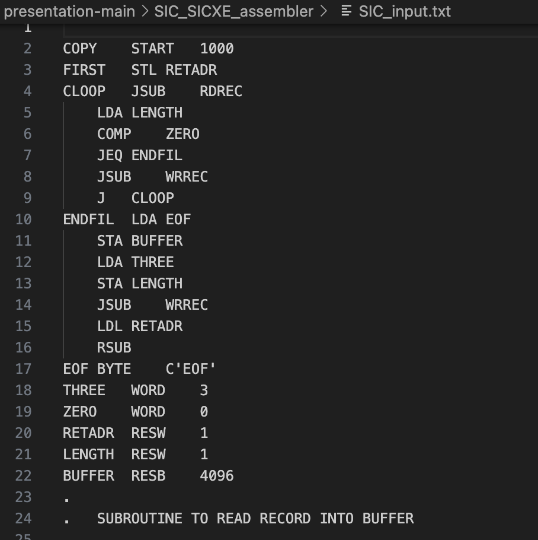

|
Yu-Han Lee I am currently pursuing a Master's degree in Advanced Computing at King's College London. I have previously worked as an intern at Taiwan Mobile Co., Ltd, where I was involved in web technology and customer service systems. Additionally, I have contributed to various projects involving machine learning and deep learning. |
News
|
||||||||||
Research |
|
|
Basketball Game Visualization and Performance Evaluation
Yu-Han Lee 2025 Implemented an individual project under the supervision of the professor at King's College London Analyzed player shooting positions and frequencies using YOLOv8 for classification. |
|
|
Classroom Roll Call Technology Based on One-shot Learning
Yu-Han Lee, Wen-Jun Lin, Wen-Hsin Hsu NSTC, 2023 TAAI, 2023 Researched Few-shot learning using deep learning to address face recognition challenges in a student roll call system. Combined data augmentation, transfer learning, and Triplet Network to train a model with one photo per student, achieving accurate face recognition. |
Project |
|
|
Our-Scheme (Programming Language Project)
Yu-Han Lee 2023 Built a custom C++ interpreter for processing and evaluating expressions based on formal language specifications. Engineered lexical analysis and syntax parsing modules to tokenize and interpret user input. |
|
 |
5-stage Pipelined CPU (Computer Organization Project)
Yu-Han Lee 2022 Designed and implemented a 5-stage pipelined MIPS-Lite CPU using Verilog HDL and ModelSim, supporting arithmetic, logic, memory, and branching operations, validated through waveform simulations. |
|
 |
SIC/SICXE Assembler (System Programming Project)
Yu-Han Lee 2021 Developed a two-pass assembler in C++ for SIC and SIC/XE machine languages, translating source code into object code with syntax validation and support for various instructions. |